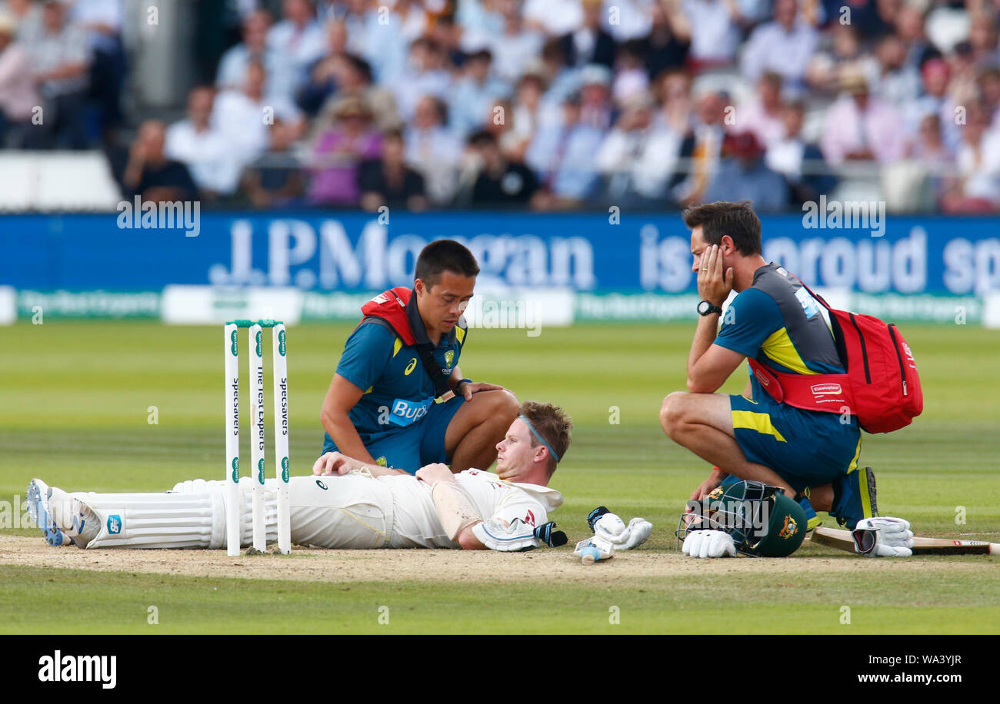
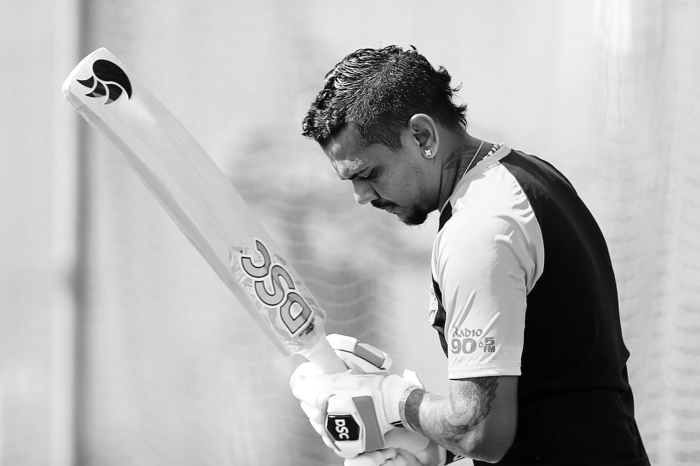

The Hustle and Challenges
Cricket may be beautiful, but the path of a Cricketers is paved with obstacles. Discover the physical, mental, and social challenges hobbyists face.
Overcoming Obstacles on and off the Pitch
While cricket brings immense joy to its practitioners, the journey is rarely smooth. Hobbyist footballers face numerous challenges that test their dedication to the sport. These obstacles come in various forms - physical, mental, logistical, and social. Understanding these challenges helps appreciate the commitment required to maintain football as a serious hobby.
Physical Challenges
The physical demands of cricket are considerable, even at amateur levels. Players must maintain cardiovascular endurance to keep up with the pace of the game, which involves constant movement over 90 minutes or more. The sport requires explosive speed for sprints, strength for shielding the ball and winning tackles, and flexibility to execute technical skills and avoid injury.
Injuries represent one of the most significant physical challenges. From minor sprains and bruises to more serious issues like ligament tears or fractures, cricket carries inherent risks. Hobbyists often lack access to professional medical care and must balance recovery with work or school commitments. Many passionate players have stories of playing through pain or returning too soon from injuries, driven by their love for the game.
Weather conditions present another physical hurdle. Unlike professionals who play in ideal conditions, hobbyists often brave extreme heat, cold, rain, or snow. The quality of pitches varies dramatically, with uneven surfaces increasing injury risk. Yet dedicated players adapt, learning to adjust their game for different environments and surface types.
Time Management Struggles
Balancing cricket with other life responsibilities is an ongoing challenge for hobbyists. Unlike professional athletes whose job is to play, hobbyists must fit training and matches around work, studies, and family commitments. This often means early morning workouts, late-night practices, or sacrificing weekends for matches.
The time commitment extends beyond actual play. There's travel time to and from pitches, equipment maintenance, watching matches for learning, and physical recovery. Serious hobbyists might spend 10-20 hours weekly on cricket-related activities, which requires careful scheduling and sometimes difficult prioritization when other obligations compete for attention.
Mental and Emotional Challenges
The mental aspect of cricket is often underestimated. Dealing with performance pressure, even in amateur settings, can be stressful. Players might face self-doubt after poor performances, frustration with skill plateaus, or anxiety before important matches. The emotional rollercoaster of wins and losses affects hobbyists just as it does professionals, albeit with different stakes.
Team dynamics introduce another layer of complexity. Unlike individual sports, football requires coordinating with others who may have different skill levels, commitment, or playing philosophies. Managing conflicts, adapting to various playing styles, and maintaining positive team chemistry demand emotional intelligence and patience.
For those balancing competitive aspirations with the reality of being amateurs, there's the challenge of accepting limitations. Most hobbyists will never reach professional levels, and coming to terms with this while maintaining passion for improvement requires mental resilience. The key is finding satisfaction in personal progress and the joy of playing rather than external validation.